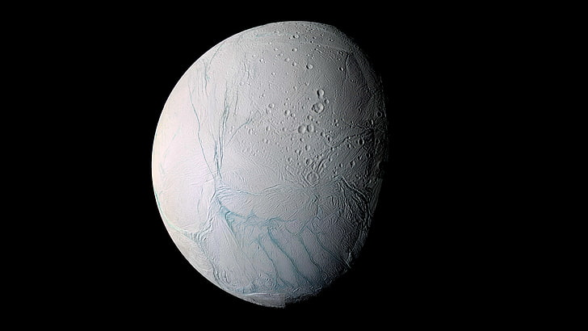
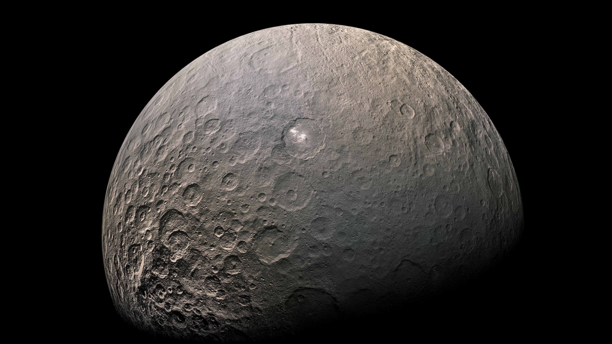
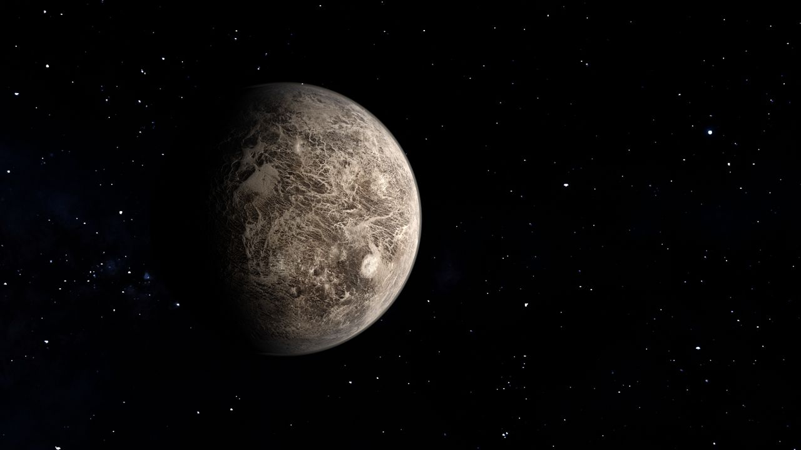

اكتشاف أول كوكب قزم في حزام الكويكبات.
سيريس هو أكبر جسم في حزام الكويكبات بين المريخ والمشتري، ويصنف على أنه كوكب قزم وكويكب. اكتشفه جوزيبي بيازي عام 1801، ولا يزال أحد أكثر الأجسام إثارة للاهتمام في نظامنا الشمسي.
I لها تاريخ مثير للاهتمام، مع ميزات مثل نقطة مضيئة غامضة تشير إلى إمكانية وجود الماء تحت سطحها الجليدي. يعد استكشاف سيريس أمرًا حيويًا لفهم النظام الشمسي المبكر وإمكانية الحياة خارج الأرض..
يقدم سيريس، وهو أكبر جسم في حزام الكويكبات، رؤية فريدة للنظام الشمسي المبكر. وبفضل نقاطه المضيئة الغامضة ومحتواه من الجليد المائي، فقد أصبح موضوعًا لاستكشافات مكثفة.
هنا يمكنك استكشاف كل شيء عن المجرة وخصائصها. تعرف على النجوم والثقوب السوداء والسدم وغير ذلك الكثير.
ترقبوا اكتشافات مثيرة واستكشفوا عجائب الكون!